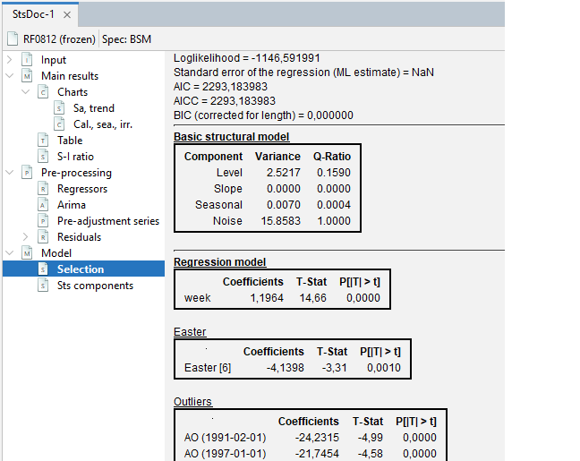

rjd3toolkit::seasonality_canovahansen(
data = df_daily$births,
p0 = min(ch.sp),
p1 = max(ch.sp),
np = max(ch.sp) - min(ch.sp) + 1
)New Features in v 3.x family
In this chapter
This chapter provides an overview of the new features in version 3.x as well as significant modification of display or content for features already available in v 2.2.4. Compared to its predecessor, version 3.x provides:
Additional Algorithms for Seasonal Adjustment (SA), Benchmarking and Temporal Disaggregation (TD), Nowcasting, Revision Analysis
More stand alone time series tools
More “acceptable” frequencies in SA
New SA (mass) production possibilities
Seasonal Adjustment and Modelling
Seasonal adjustment algorithms

Improvements on historical algorithms
Improvements X-13-Arima and Tramo-Seats (historical JD+)
New acceptable data frequencies for seasonal adjustment and modelling of low frequency data:
- In v3.x Low frequency data: $p$ in ${2,3,4,6,12}$ is admissible in all algorithms (historical and new) - In version 2, only Tramo-Seats supported all these frequencies, whereas X13-Arima was restricted to $p$ in ${2,4,12}$outlier correction taken into account when selecting decomposition scheme
ex-ante leap year correction added to Tramo-Seats (like in X13)
automatic trading day regressors selection from pre-defined sets built, according to groups of days
specification: split into two distinct concepts, which can be directly manipulated by the user:
reference (or domain) specification: a global set of constraints inside of which estimation will be performed
point (or estimation) specification: contains all parameter choices resulting from estimation
The user can transform a given “estimation specification” in a user defined specification.
New algorithms in v3.x
Tramo-Seats and X-13-Arima share a very similar and sophisticated pre-adjustment process for the Arima model selection phase.
For new algorithms, the philosophy is to offer
a simplified pre-adjustment on the arima modelling side, reduced to airline model
several enhanced decomposition options
stl+ (“+” stands for airline based pre-adjustment)
x12+: airline based pre-adjustment + new trend estimation filters (Local Polynomials)
seats+ (to come in the target v3 version): airline based pre-adjustment + AMB decomposition
SA with Basic Structural Models (BSM) available in GUI
In version 3.x, SA with Basic Structural Models is a fully integrated process with outlier detection, calendar correction and options on external regressors.
Fundamentally it is a one-step estimation, performing pre-adjustment and decomposition (with explicit components) in the same run
This makes regression variable selection more complicated:
first step: a variable selection is performed with a Tramo like airline model regression
second: the entire structural model is estimated
In version 3.x this process is available from the graphical user interface.


SA algorithms extended for high-frequency data
All algorithms are available via an R package and will be available in GUI (in target v 3.x version)
Extended Airline estimation, reg-Arima like (
rjd3highfreqand GUI )Extended Airline Decomposition, Seats like (
rjd3highfreqand GUI )MX12+ (
rjd3x11plus, GUI upcoming)MSTL+ (
rjd3stland in GUI)MSTS (
rjd3sts, GUI upcoming)
Modelling Algorithms
| Algorithm | Access in GUI | Access in R (v2) | Access in R (v3) |
|---|---|---|---|
| Reg-Arima | ✔️ | RJDemetra | rjd3x13 |
| Tramo | ✔️ | RJDemetra | rjd3tramoseats |
| Extended Airline | ✔️ (v3 only) | ✖ | rjd3highfreq |
| STS | ✔️ (v3 only) | rjdsts (deprecated) | rjd3sts |
New SA (mass) production possibilities
New R Tools for wrangling workspaces
With functions for
changing raw data path
customizing specifications
merging workspaces by series names, as you would do with a data table
These functions are in rjd3providers and rjd3workspace packages, (already in a v 2.x stable precursor rjdworkspace)
Production fully in R
without a workspace structure
TS objects and full flexibility for customizing specifications
new R functions enabling to apply revision policies (
rjd3x13::refreshandrjd3tramoseats::refresh), with even more flexibility on data spans
Inherent shortcoming: data no readable by GUI, depriving of more sophisticated and visual feedback (compared to R) for manual fine tuning.
Solution : new R functions to create GUI readable dynamic workspaces on the fly (in aforementioned packages).
In the target 3.x, additional algorithms (X12+, STL+, BSM) will also be usable in production with a workspace and cruncher (on low frequency data)
Time series general purpose tools
Version 3.x offers more stand alone tools (mainly in rjd3toolkit)
Tests (seasonality, auto-correlation, normality, randomness…)
(Fast) Arima Modelling
Flexible Calendar regressors generation
Auxiliary variables for pre-adjustment
Spectral analysis (in GUI)
Detection of multiple seasonal patterns (Canova-Hansen test)
State space frame work as a toolbox (
rjd3sts)
Canova-Hansen test to identify multiple seasonal patterns

Underway developments
Moving Trading Days module integrated in all SA algorithms (for low and high frequency data), with two implementations one based on rolling windows and one on state space modelling
Using Cubic Splines for smoother seasonal factors estimation of long periodicities (\(p=365,25\))